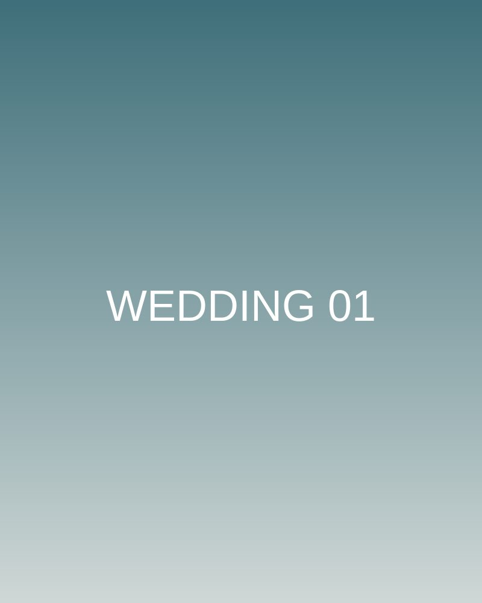
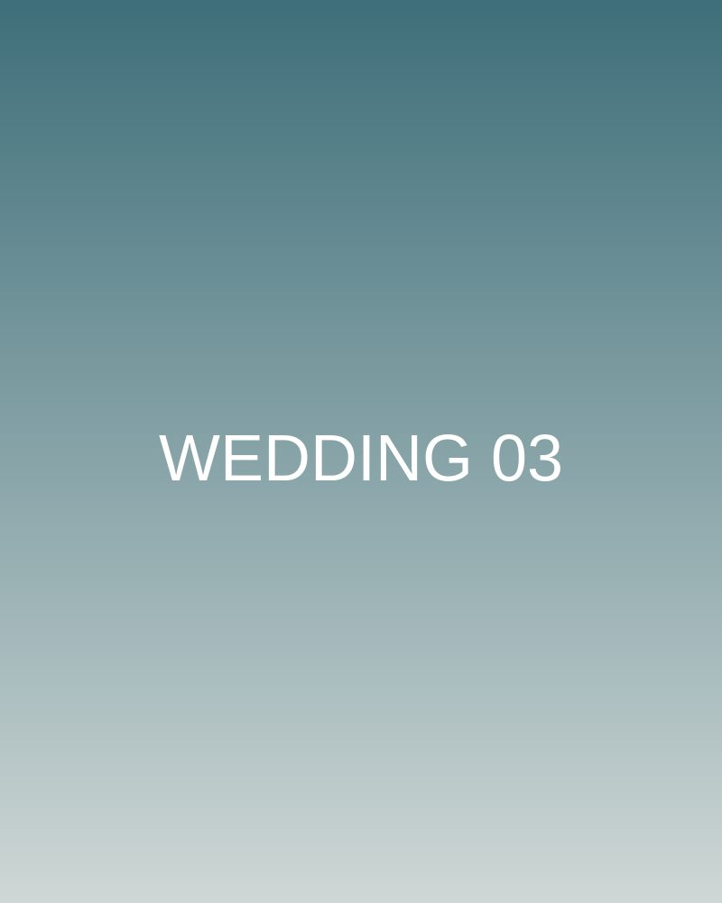
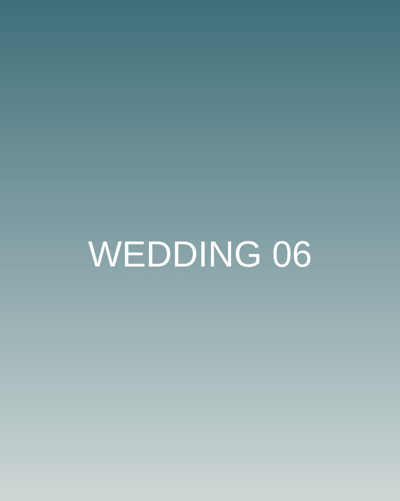
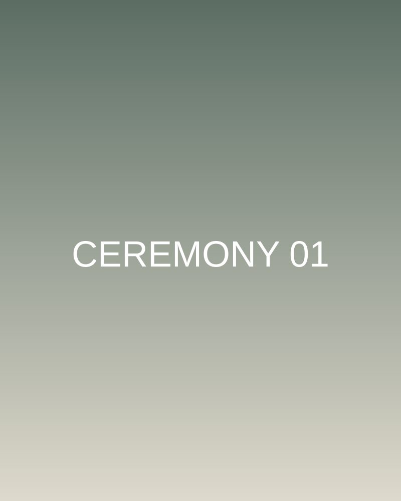
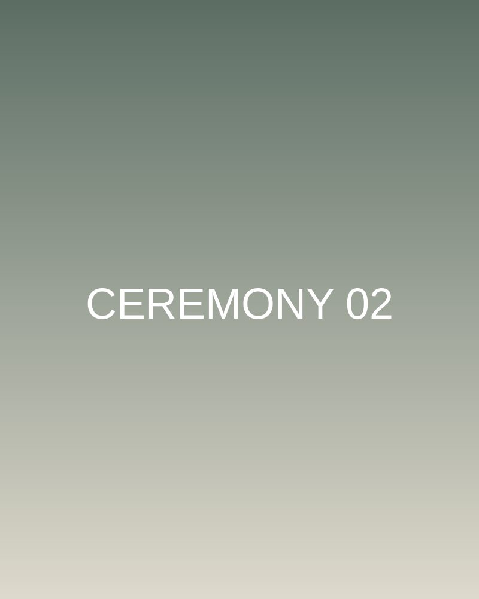
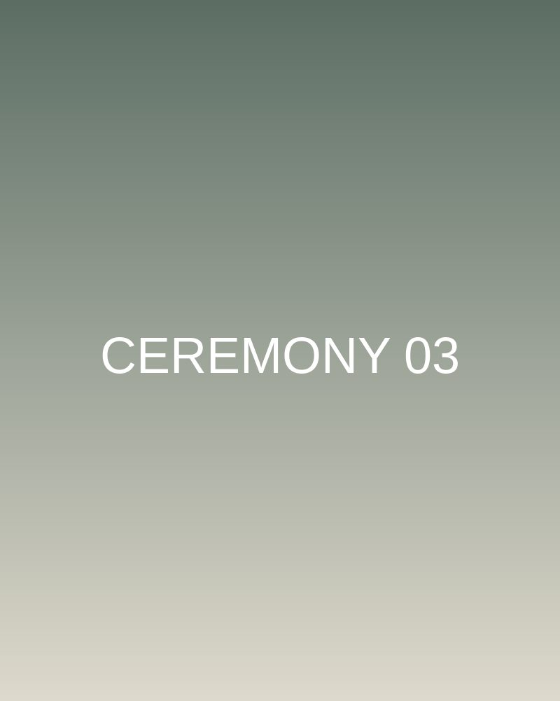
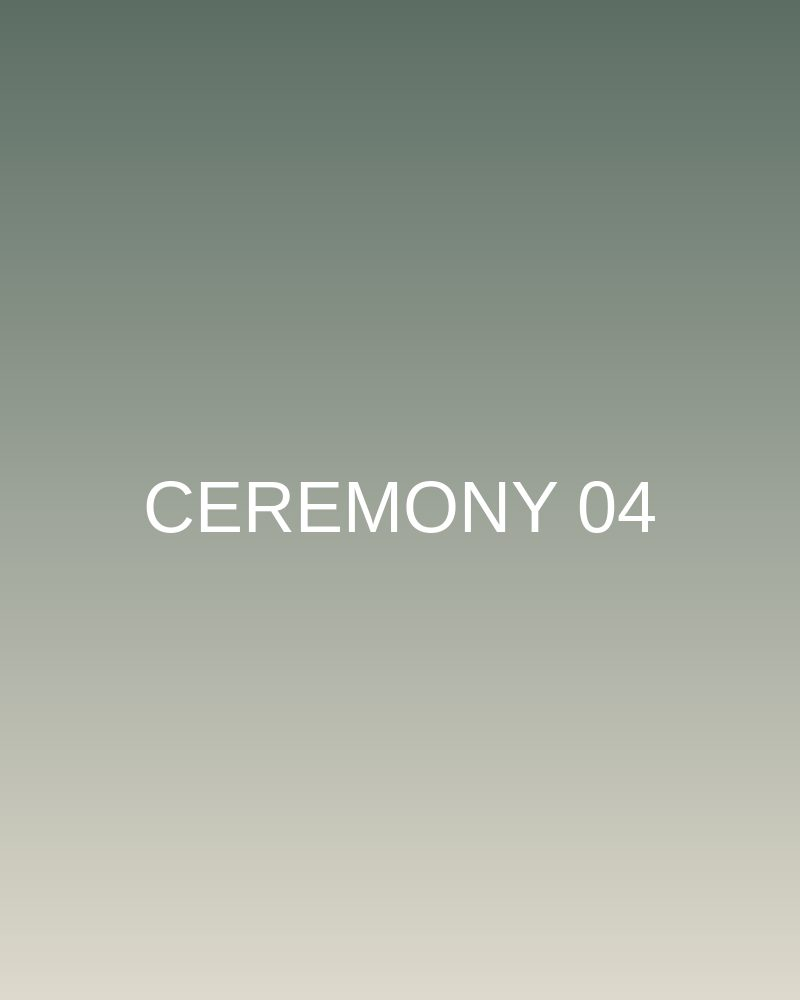
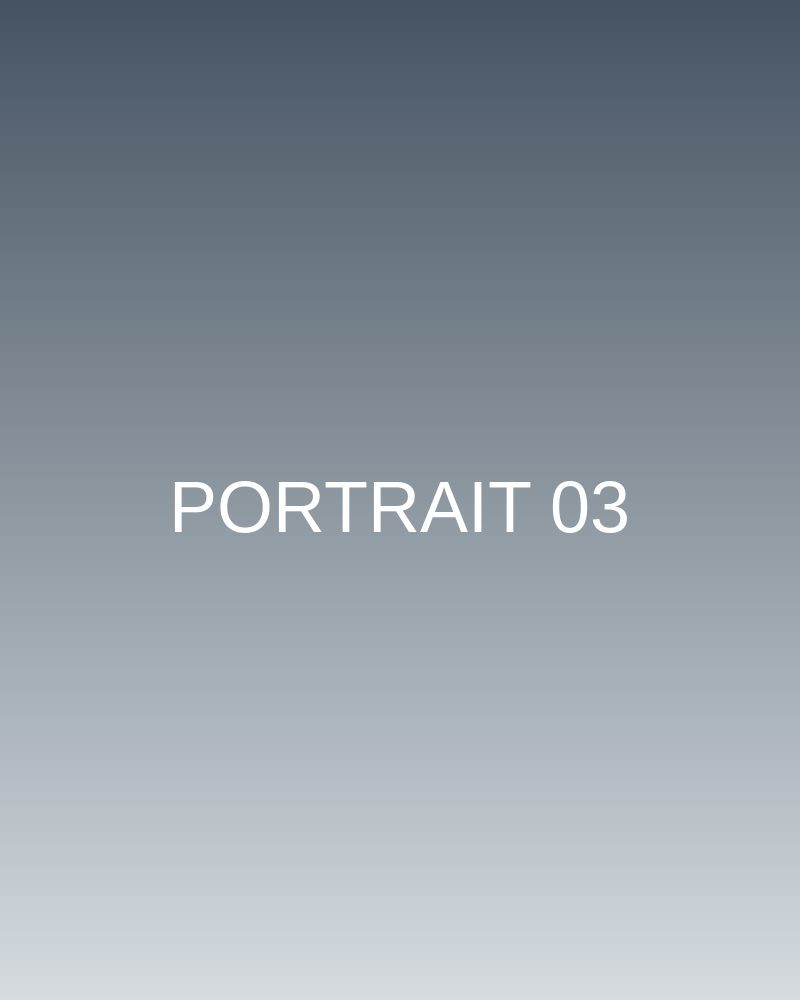
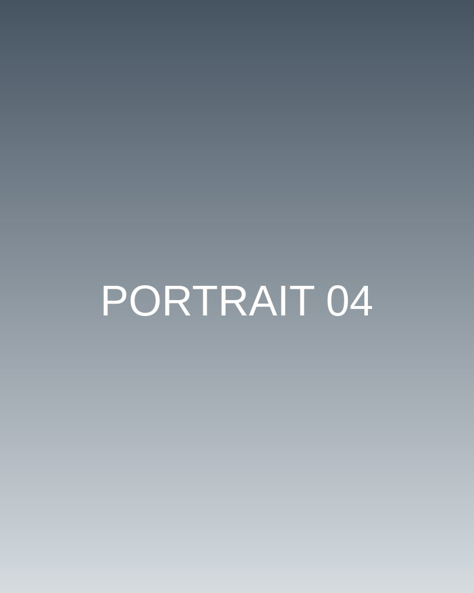
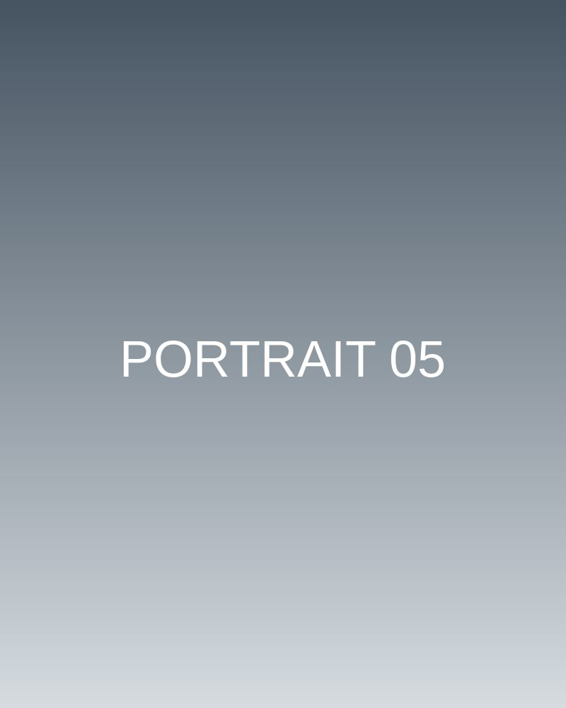

海邊自然風婚紗
情境：黃昏的臺中海線，風大、光線變化快。
需求：不想要僵硬擺拍，希望照片看起來像日常的兩個人。
成品方向：以引導式互動取代固定姿勢，色調柔和，保留膚色與環境原貌。
臺中在地拍攝，從街角到會場，記錄最自然的片刻。










每一組拍攝，都從了解你們的故事開始。
情境：黃昏的臺中海線，風大、光線變化快。
需求：不想要僵硬擺拍，希望照片看起來像日常的兩個人。
成品方向：以引導式互動取代固定姿勢，色調柔和，保留膚色與環境原貌。
情境：百人婚禮，流程緊湊、場地光線複雜。
需求：留下長輩、朋友與新人的真實反應，不打擾流程。
成品方向：紀實取向，重視情緒瞬間與現場關係，交付完整故事線。
情境：咖啡店與工作室雙場景拍攝。
需求：官網、社群、媒體採訪都能使用，有專業感但不做作。
成品方向：自然表情、輕度修飾，提供多種構圖尺寸以利各平台運用。
以下價格為參考區間，實際報價依日期、地點與需求調整。
NT$ 20,000 – 28,000
NT$ 25,000 – 26,000
NT$ 3,500 – 8,000
清楚的流程，讓你們輕鬆面對鏡頭。
我是藍桉攝影工作室的攝影師，長期在臺中拍攝婚紗、婚禮與形象照。相信好照片來自彼此信任：拍攝前我會花時間聊聊你們的個性與期待，現場以引導代替擺拍，讓表情與氣氛自然發生。後製維持真實膚色與環境光，不做過度修飾，讓多年後回看仍然是當天的你。
填寫後會開啟你的電子郵件，我會在 1–2 個工作天內回覆。